Edgar Degas — Paintings on Stamps
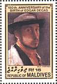

Degas, (Hilaire Germain) Edgar (1834-1917) was a French painter and sculptor, whose innovative composition, skillful drawing, and perceptive analysis of movement made him one of the masters of modern art in the late 19th century.
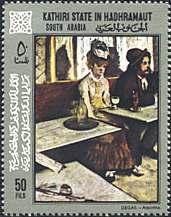
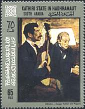

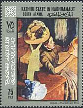
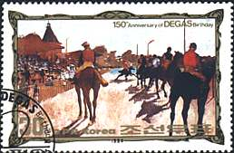
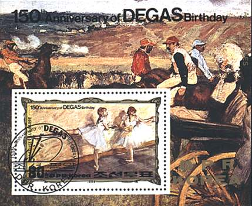
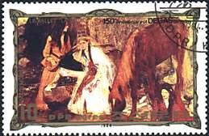
He was attracted by theatrical subjects, and most of his works depict racecourses, theaters, cafés, music halls, or boudoirs. Degas was a keen observer of humanity—particularly of women, with whom his work is preoccupied—and in his portraits as well as in his studies of dancers, milliners, and laundresses, he cultivated a complete objectivity, attempting to catch his subjects in poses as natural and spontaneous as those recorded in action photographs.
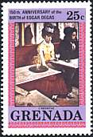
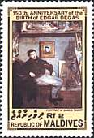
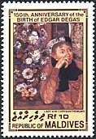
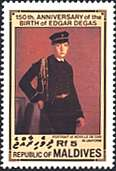
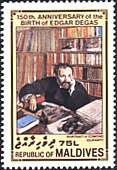
In the 1880s, when his eyesight began to fail, Degas began increasingly to work in two new media that did not require intense visual acuity: sculpture and pastel. In his sculpture, as in his paintings, he attempted to catch the action of the moment, and his ballet dancers and female nudes are depicted in poses that make no attempt to conceal their subjects' physical exertions.
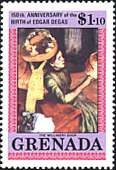
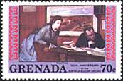
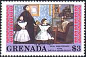
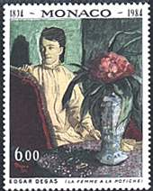
His pastels are usually simple compositions containing only a few figures. He was obliged to depend on vibrant colors and meaningful gestures rather than on precise lines and careful detailing, but, in spite of such limitations, these works are eloquent and expressive and have a simple grandeur unsurpassed by any of his other works.
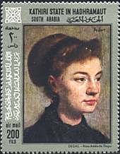
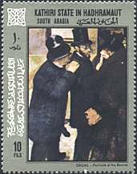
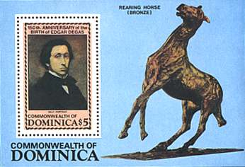
Degas was not well known to the public, and his true artistic stature did not become evident until after his death. He died in Paris on September 27, 1917. (Sources: MS Encarta 96, Britannica Online).